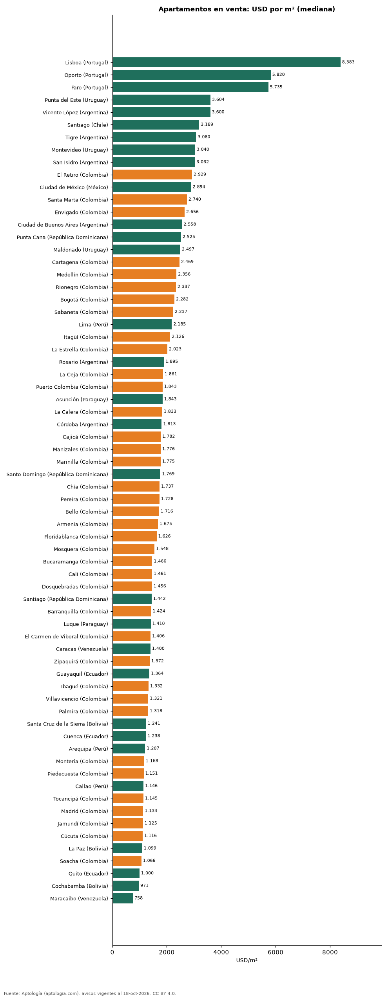

Precio del metro cuadrado de apartamentos en venta en 68 ciudades de Latinoamérica y Portugal (octubre 2026)
Estudio con datos abiertos (CC BY 4.0). Versión original: https://github.com/elbroker/aptologia-datos/tree/main/estudios/precio-m2-venta-apartamentos-ciudades-latinoamerica-2026 · DOI: 10.5281/zenodo.23460708
El metro cuadrado de un apartamento en venta más caro de Latinoamérica está en Punta del Este (Uruguay, balneario), con una mediana de USD 3.604/m²; el más barato de la muestra, en Maracaibo (Venezuela), con USD 758/m². Bogotá queda en el puesto 20 de 68 con USD 2.282/m², y la ciudad colombiana más cara es El Retiro (USD 2.929/m²). Lisboa, fuera de la región, marca USD 8.383/m².
Resumen: comparamos 185.251 apartamentos en venta con área declarada en 68 ciudades de 12 países.
Actualizado: 18 de octubre de 2026 (datos del 18 de octubre de 2026) · Próxima actualización: mensual.

Resumen
| Indicador | Valor |
|---|---|
| Ciudad más cara (Latinoamérica) | Punta del Este: USD 3.604/m² |
| Ciudad más barata | Maracaibo: USD 758/m² |
| Bogotá | USD 2.282/m² (puesto 20) |
| Ciudades comparadas | 68 |
| Avisos con área | 185.251 |
Ranking de ciudades (30 avisos o más)
| País | Ciudad | USD/m² (mediana) | Avisos con área |
|---|---|---|---|
| Portugal | Lisboa | 8.383 | 1.548 |
| Portugal | Oporto | 5.820 | 607 |
| Portugal | Faro | 5.735 | 86 |
| Uruguay | Punta del Este | 3.604 | 4.562 |
| Argentina | Vicente López | 3.600 | 157 |
| Chile | Santiago | 3.189 | 6.247 |
| Argentina | Tigre | 3.080 | 121 |
| Uruguay | Montevideo | 3.040 | 4.466 |
| Argentina | San Isidro | 3.032 | 181 |
| Colombia | El Retiro | 2.929 | 618 |
| México | Ciudad de México | 2.894 | 7.519 |
| Colombia | Santa Marta | 2.740 | 3.779 |
| Colombia | Envigado | 2.656 | 5.735 |
| Argentina | Ciudad de Buenos Aires | 2.558 | 8.128 |
| República Dominicana | Punta Cana | 2.525 | 442 |
| Uruguay | Maldonado | 2.497 | 156 |
| Colombia | Cartagena | 2.469 | 5.774 |
| Colombia | Medellín | 2.356 | 20.515 |
| Colombia | Rionegro | 2.337 | 3.023 |
| Colombia | Bogotá | 2.282 | 31.265 |
| Colombia | Sabaneta | 2.237 | 4.375 |
| Perú | Lima | 2.185 | 9.331 |
| Colombia | Itagüí | 2.126 | 2.012 |
| Colombia | La Estrella | 2.023 | 561 |
| Argentina | Rosario | 1.895 | 33 |
| Colombia | La Ceja | 1.861 | 312 |
| Colombia | Puerto Colombia | 1.843 | 144 |
| Paraguay | Asunción | 1.843 | 4.612 |
| Colombia | La Calera | 1.833 | 139 |
| Argentina | Córdoba | 1.813 | 188 |
| Colombia | Cajicá | 1.782 | 1.517 |
| Colombia | Manizales | 1.776 | 2.788 |
| Colombia | Marinilla | 1.775 | 164 |
| República Dominicana | Santo Domingo | 1.769 | 7.645 |
| Colombia | Chía | 1.737 | 1.507 |
| Colombia | Pereira | 1.728 | 4.376 |
| Colombia | Bello | 1.716 | 2.319 |
| Colombia | Armenia | 1.675 | 2.278 |
| Colombia | Floridablanca | 1.626 | 919 |
| Colombia | Mosquera | 1.548 | 817 |
| Colombia | Bucaramanga | 1.466 | 2.439 |
| Colombia | Cali | 1.461 | 9.365 |
| Colombia | Dosquebradas | 1.456 | 607 |
| República Dominicana | Santiago | 1.442 | 594 |
| Colombia | Barranquilla | 1.424 | 7.532 |
| Paraguay | Luque | 1.410 | 74 |
| Colombia | El Carmen de Viboral | 1.406 | 90 |
| Venezuela | Caracas | 1.400 | 1.464 |
| Colombia | Zipaquirá | 1.372 | 819 |
| Ecuador | Guayaquil | 1.364 | 915 |
| Colombia | Ibagué | 1.332 | 1.217 |
| Colombia | Villavicencio | 1.321 | 347 |
| Colombia | Palmira | 1.318 | 112 |
| Bolivia | Santa Cruz de la Sierra | 1.241 | 1.679 |
| Ecuador | Cuenca | 1.238 | 331 |
| Perú | Arequipa | 1.207 | 583 |
| Colombia | Montería | 1.168 | 288 |
| Colombia | Piedecuesta | 1.151 | 246 |
| Perú | Callao | 1.146 | 121 |
| Colombia | Tocancipá | 1.145 | 264 |
| Colombia | Madrid | 1.134 | 475 |
| Colombia | Jamundí | 1.125 | 466 |
| Colombia | Cúcuta | 1.116 | 561 |
| Bolivia | La Paz | 1.099 | 462 |
| Colombia | Soacha | 1.066 | 566 |
| Ecuador | Quito | 1.000 | 2.240 |
| Bolivia | Cochabamba | 971 | 366 |
| Venezuela | Maracaibo | 758 | 62 |
Precio pedido mediano por metro cuadrado de apartamentos en venta, convertido a dólares.
Preguntas frecuentes
¿Cuál es la ciudad con el metro cuadrado más caro de Latinoamérica? En la muestra de Aptología de octubre de 2026, Punta del Este (Uruguay), con una mediana de USD 3.604 por m² en apartamentos en venta.
¿Cuánto cuesta el metro cuadrado en Bogotá en dólares? La mediana es USD 2.282 por m² (7,26 millones de pesos), puesto 20 de 68 ciudades.
¿Dónde es más barato comprar apartamento en Latinoamérica? Entre las ciudades con 30 avisos o más, en Maracaibo (Venezuela), con USD 758 por m².
Metodología
- Fuente: exportes nocturnos de la base de datos de Aptología (aptologia.com) del 18 de octubre de 2026: avisos vigentes de vivienda en portales inmobiliarios de 13 países, recogidos por Aptología y vistos en línea entre el 11 y el 18 de octubre de 2026. Corte: 18 de octubre de 2026.
- Depuración: se eliminan duplicados exactos (misma ciudad, zona, tipo, precio, moneda, área, habitaciones y baños) y los precios fuera del percentil 1–99 de cada país, operación, moneda y tipo; el precio por m² usa solo avisos con área declarada entre 12 y 2.000 m² y también se recorta al P1–P99.
- Qué se mide: precios pedidos (publicados), no precios de cierre. En arriendo, el canon mensual sin administración, gastos comunes ni condominio.
- Muestra mínima: cada cifra publicada se apoya en al menos 30 avisos; las celdas con menos se omiten.
- Monedas: nunca se mezclan avisos de monedas distintas sin convertirlos. Conversión a dólares con la tasa de mercado de ExchangeRate-API (open.er-api.com, actualización del 18 Oct 2026): 1 USD = 3.182,80 COP, 1 USD = 18,47 M.N, 1 USD = 5,09 BRL, 1 USD = 3,44 PEN, 1 USD = 982,44 CLP, 1 USD = 1.514,57 ARS, 1 USD = 40,20 UYU, 1 USD = 5.705,37 PYG, 1 USD = 61,27 DOP, 1 USD = 0,89 EUR, 1 USD = 11,72 BOB; la UF chilena a 41.178,64 CLP (mindicador,cl. 18-oct-2026). Los avisos publicados en dólares se usan tal cual.
- Limitaciones: la cobertura depende de los portales que recorre Aptología en cada país y es mayor en las ciudades grandes y en los segmentos medio-alto y alto; el área es la que declara el aviso, sin verificar; los nombres de zona vienen de los portales.
- Privacidad: solo se publican agregados; no se publica ningún dato personal, enlace a avisos ni nombre de anunciante.
- Datos abiertos: datos.csv, licencia CC BY 4.0.
Cómo citar
Pinzón Pineda, D. M. (2026). Precio del metro cuadrado de apartamentos en venta en 68 ciudades de Latinoamérica y Portugal (octubre 2026). Aptología (aptologia.com). https://github.com/elbroker/aptologia-datos/tree/main/estudios/precio-m2-venta-apartamentos-ciudades-latinoamerica-2026. Datos: datos.csv, licencia CC BY 4.0.